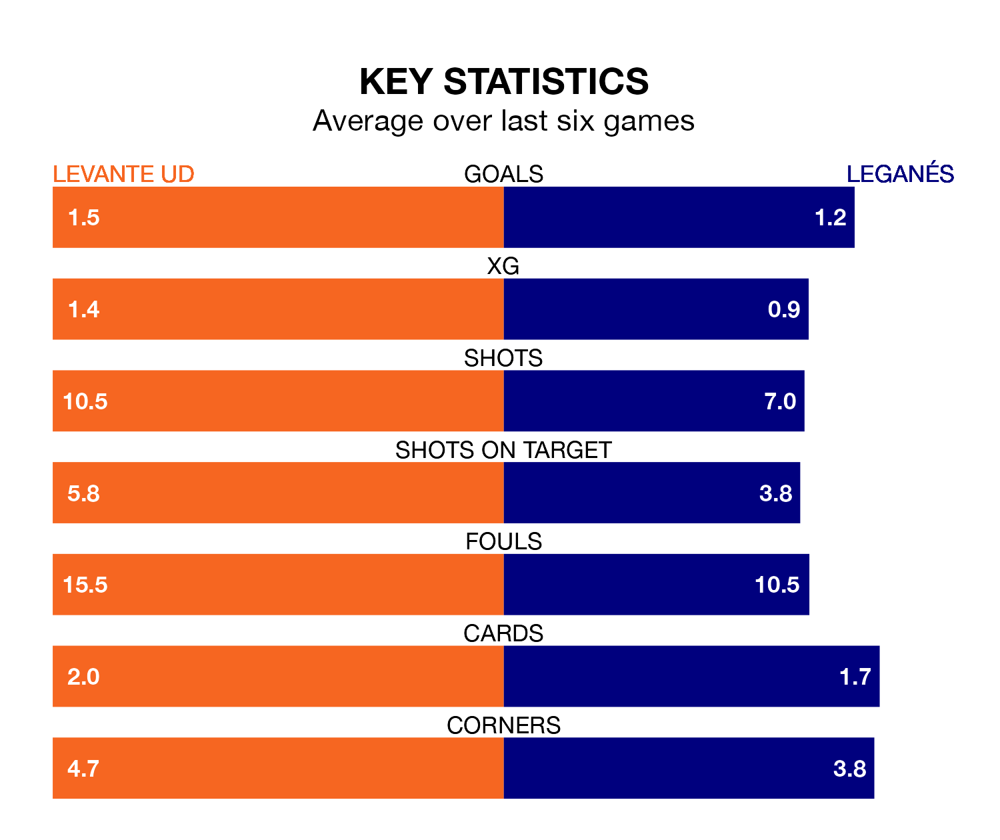

Levante UD host Leganés on Friday at the Estadio Ciudad de Valencia in the Segunda División.
In their last league match, on Sunday, Levante lost to RCD Espanyol 2-1 away, with their goal scored by Adrián De La Fuente.
Leganés drew, 0-0 at home against Real Valladolid on Saturday.
Leganés are top of the table after 25 games, of which they have won 13 and drawn seven, earning 46 points.
Levante are eight places behind the away side in ninth, with nine wins and 10 draws putting them on 37 points.
With 36 goals in 25 games so far this season, Leganés are scoring more than average in the league with 1.4 goals per game. And they are conceding fewer than average, letting in 16 goals at a rate of 0.6 per game.
The hosts are also above average scorers, with 1.3 goals per game, compared to a league average of 1.2. They have conceded 1.2 goals per game.
In the last 10 years, Levante and Leganés have played each other on 10 occasions. Levante won five of them, Leganés three, and they drew twice.
On average, Levante scored 1.4 goals and Leganés 0.9 in those matches.
Their last meeting was on November 10, when Leganés won 2-1 at home.
With Diego Conde between the sticks, Leganés can rely on one of the league's safest pair of hands. He has kept 10 clean sheets in his 23 appearances this season, and only two other 'keepers – Sporting Gijón's Orlando Rubén Yáñez Alabart and CD Tenerife's Juan Soriano Oropesa – have been able to prevent the opposition scoring on more occasions in the Segunda División.
In Levante's net, Andrés Fernández has eight clean sheets in 17 games. He has conceded a goal every 128 minutes, 10% more often than the 142 minutes between goals for Conde Alcolado.
Levante are in mixed form in the Segunda División, with two wins and three draws from their last six games.
And also with two wins and three draws over that period, the visitors' form is identical – they have both taken nine points from 18.
Updated: 11:18 (UTC), 08/02/24